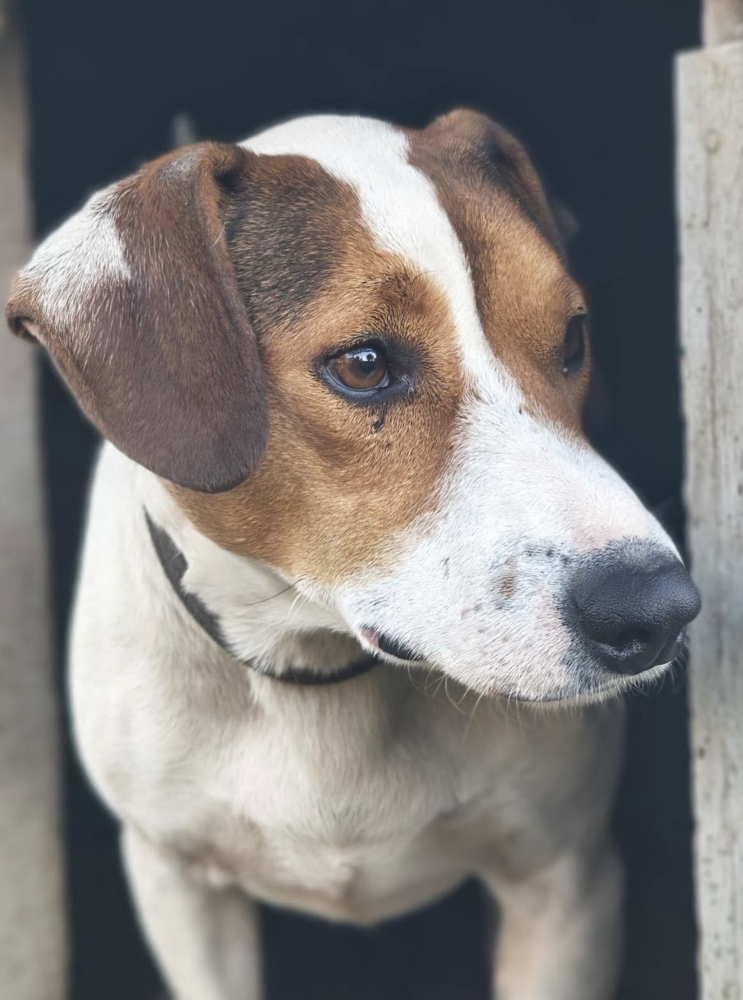
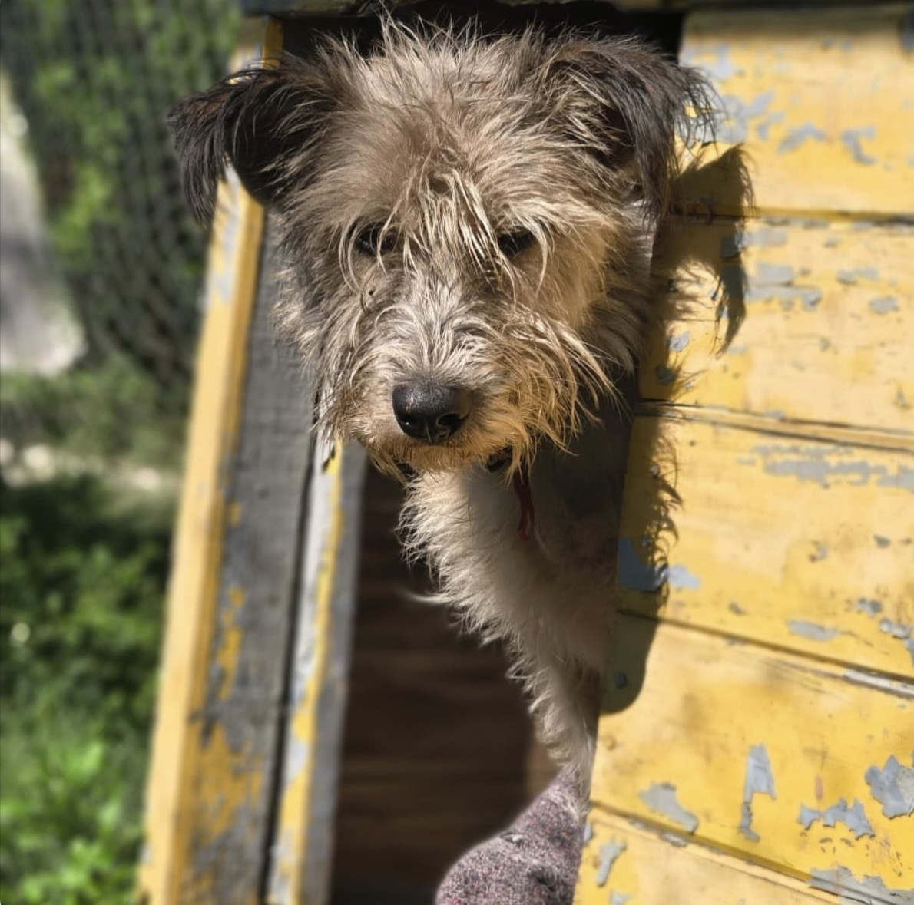
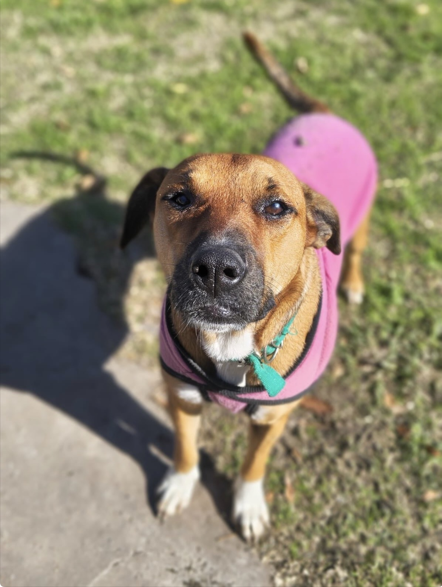

Pancho
DisponibleSociable y activo, le encanta que lo saquen a pasear por el refugio.
Catálogo de adopción
Todos fueron rescatados de situación de calle, abandono o maltrato y ya están evaluados por nuestro equipo. Filtrá por tamaño y edad para encontrar tu compañero.

Sociable y activo, le encanta que lo saquen a pasear por el refugio.

Recién llegado al refugio, todavía tímido pero muy dócil. Está en proceso de adaptación.

Tranquila y observadora, siempre atenta a lo que pasa alrededor. Se lleva bien con las visitas.
Torpe y encimoso, todavía está aprendiendo. Necesita paciencia.